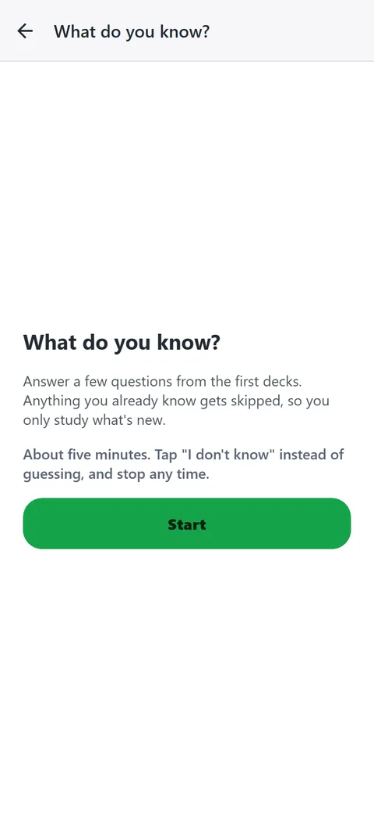

How to skip what you already know in a Yaaddi course
Short answerOpen the course map and tap the lightning button, labeled "What do you know?". Answer a few questions for about five minutes and Yaaddi marks the decks you know so you only study what is new.
Steps
Open a course from the Learn tab to see its map.

Tap the lightning-bolt button in the course banner (its label is What do you know? Skip what you already know), then tap Start.

Answer the questions. Tap I don't know instead of guessing. You can stop at any time.
When the check ends, tap Skip what I know to save the result, or Start from the beginning to ignore it.
What the check does
It samples questions from the first decks. If you answer correctly, it tries later decks with a bigger step. If a step is too far, it goes back and uses a smaller one. The decks you know are marked as known and come back for a quick review in a few days, so nothing you skip is forgotten.
Good to know
- The check stops once it has skipped enough for now. You can take it again whenever you like.
- Redo this round undoes the last round of the check.
- You can also test out of a single deck with Test out of this deck from that deck's menu.
- A course needs enough questions in its early decks to offer the check. Otherwise the app says it does not have enough yet.